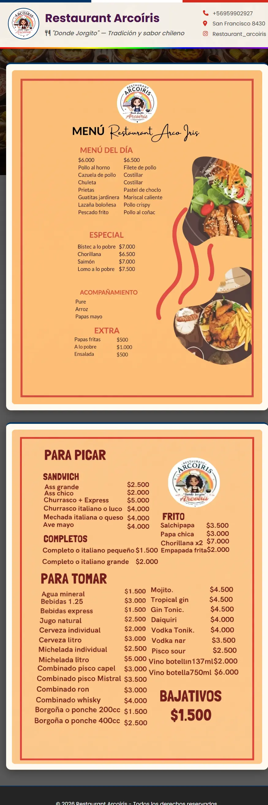
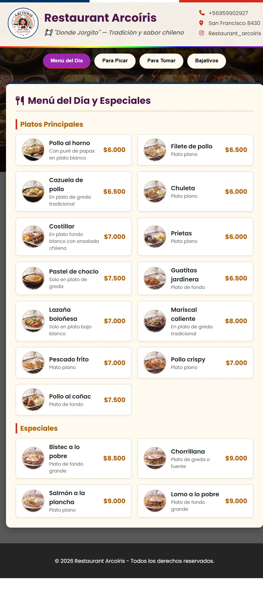
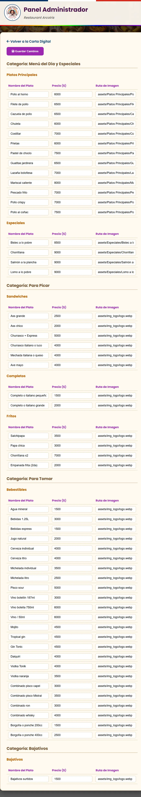
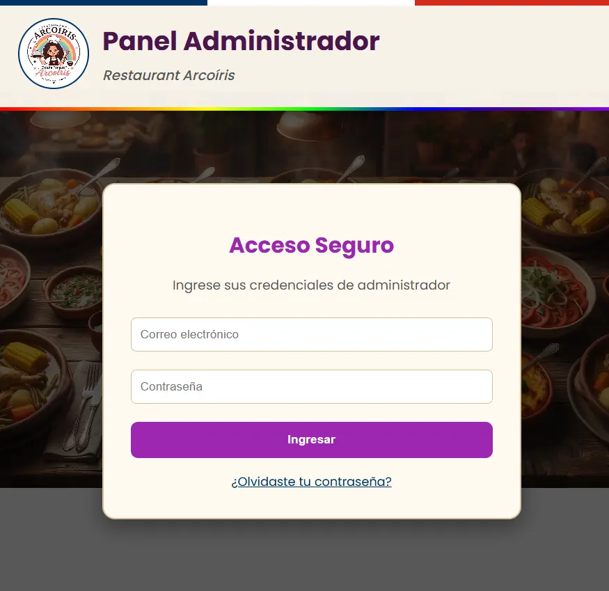
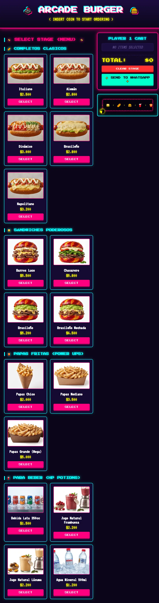
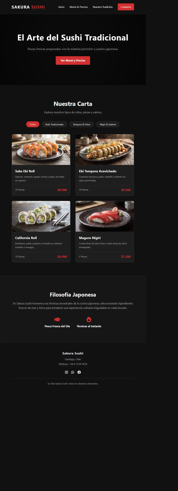
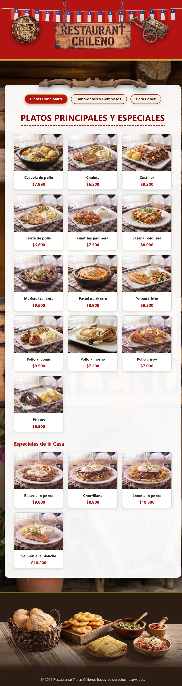

1. Para Restaurantes: Cartas Digitales & Menú QR
Ideal para salones donde los clientes escanean un código QR en la mesa para ver la carta. Ofrecemos desde menús estáticos fieles al original hasta sistemas autogestionables.

Carta QR Estática
Digitalización limpia y directa de la carta física de tu restaurante. Perfecta para mesas con código QR rápido y sin fricciones[cite: 1].

Carta
AdminCarta con Panel Administrador
Permite actualizar precios, platos y disponibilidad en tiempo real gracias a un panel interno de administración muy sencillo[cite: 1].

AccesoSistema Pro con Autenticación
Solución avanzada sincronizada en la nube con recuperación de contraseña segura por correo electrónico para múltiples administradores[cite: 1].
2. Food Trucks & Comida Rápida: Pedidos Directos a WhatsApp
Pensado para carros de comida, sándwiches, empanadas y comida al paso. Estrategia extra: Entregamos volantes impresos con código QR para que los clientes pidan directo al WhatsApp del local.
Catálogo Interactivo para Pedidos Rápidos
Diseño visualmente llamativo enfocado en antojos (hamburguesas, completos, papas fritas). El cliente arma su pedido y lo envía directamente formateado a tu WhatsApp para agilizar la entrega.
- ✓ Ideal para repartir con volantes impresos con QR
- ✓ Proceso de pedido ágil y sin intermediarios

3. Locales de Sushi: Colección de Diseños Temáticos
El sushi requiere una estética muy cuidada, minimalista y visualmente elegante para diferenciar rolls, tablas y promociones especiales.

Carta Minimalista para Sushi
Interfaz limpia y sofisticada adaptada perfectamente a la identidad visual de la comida asiática y barras de sushi[cite: 1].

Catálogo de Gastronomía Tradicional
Diseño cálido adaptado para cocina típica y platos caseros con una navegación sumamente intuitiva para todo tipo de público[cite: 1].